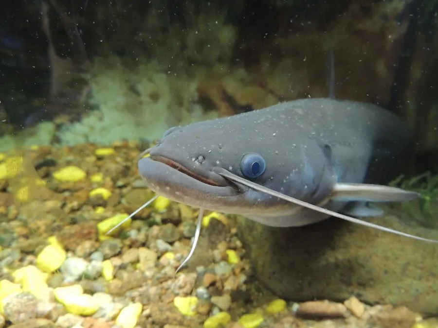

鱼类 · 动物界
鲶鱼 Silurus asotus

中国常见的底栖肉食性鱼类，体表无鳞、口周有须，昼伏夜出，靠嗅觉和触须在浑浊的水底寻找食物。
- 分类
- 门脊索动物门纲硬骨鱼纲目鲇形目科鲇科属鲇属
- 栖息环境
- 江河、湖泊、池塘和沟渠的底层，喜洞穴、石缝和泥底环境
- 地理分布
- 中国各大水系，以及日本、朝鲜半岛等地
- 保护级别
- 暂无评估；中国未列入国家重点保护野生动物名录
物种志
鲶鱼体呈长圆筒形，后部侧扁，头宽扁，口大，上下颌和犁骨上长着细齿。口周有 2–3 对须，其中上颌须最长，用来感知食物。体表无鳞，皮肤光滑且富含黏液；体色灰褐或黄褐，腹部灰白。成鱼体长一般 30–60 cm，体重 0.5–3 kg，最大可超过 1 m。
鲶鱼分布于中国各大水系以及日本、朝鲜半岛，是典型的底栖鱼类。它白天藏在洞穴、石缝和泥底中，夜间才出来觅食；肉食性，捕食小鱼、虾蟹、昆虫、蛙类和水生无脊椎动物，也吃腐肉，口裂很大，能吞下体型不小的猎物。繁殖期在 4–6 月，亲鱼在浅水草区产卵，卵带黏性，黏附在水草和石砾上孵化。鲶鱼适应力强，能在低氧和浑浊的水体中生活，是常见的食用鱼和养殖对象。目前它没有IUCN 的正式评估，中国未将其列入国家重点保护野生动物名录。
形态与习性
- 食性肉食性，捕食小鱼、虾蟹、昆虫、蛙类，也食腐肉
- 体长一般 30–60 cm，最大可超过 1 m
- 体重常见 0.5–3 kg，最大可超过 10 kg
- 繁殖4–6 月在浅水草区产卵，卵带黏性
- 习性昼伏夜出，白天藏在洞穴和石缝中
- 须口周有 2–3 对须，用来感知猎物和周围环境
趣味知识
- 鲶鱼没有鳞片，体表覆盖黏液，在泥底活动时能减少摩擦。
- 它白天躲在洞穴和石缝里，夜间才出来觅食，靠触须和嗅觉寻找猎物。
- 鲶鱼的口裂很大，能吞下体型不小的猎物。